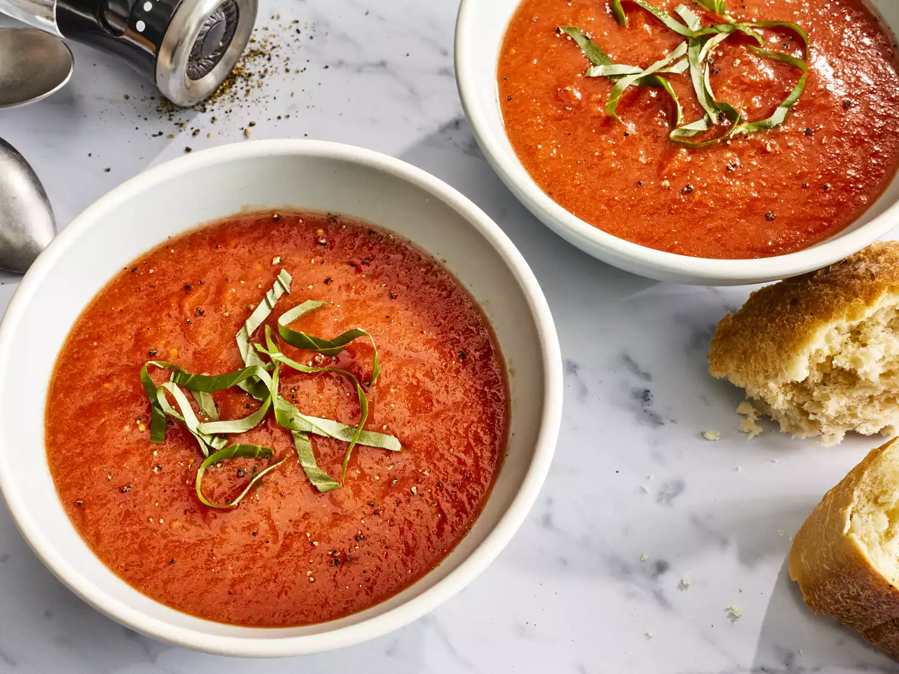

Tomato Soup
The following recipe is borrowed from allrecipes.com
Credit goes to the orignal author Charlotte

Description
This recipe for tomato soup is designed to use garden fresh ingredients
instead of canned or pre-processed tomatoes.
Ingredients
- 4 cups chopped fresh tomatoes
- 1 slice onion
- 4 cloves garlic
- 2 cups chicken broth
- 2 tablespoons butter
- 2 tablespoons all-purpose flour
- 1 teaspoon salt
- 2 teaspoons white sugar, or to taste
Steps
- Gather your ingredients
- In a stockpot, over medium heat, combine the tomatoes, large slice of onion, garlic cloves, and chicken broth.
Bring to a boil, and gently boil for about 20 minutes to blend all of the flavors.
- Remove from heat and run the mixture through a food mill into a large bowl, or pan.
Discard any stuff left over in the food mill.
- In the now empty stockpot, melt the butter over medium heat.
Stir in the flour to make a roux, cooking until the roux is a medium brown.
- Gradually whisk in a bit of the tomato mixture, so that no lumps form, then stir in the rest.
- Season with sugar and salt, and adjust to taste.
- Serve hot and enjoy!